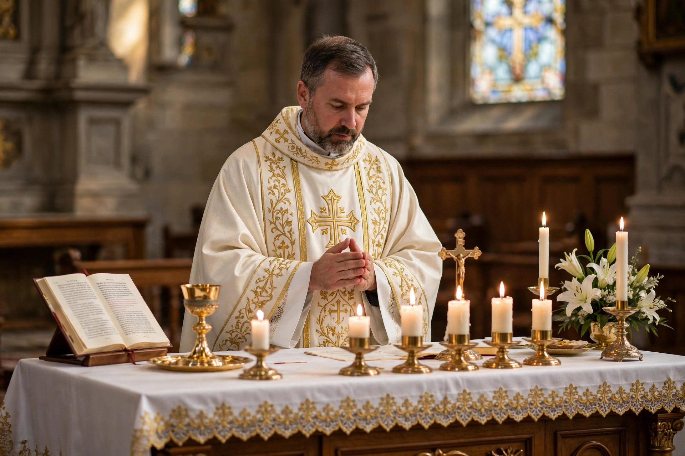

Priest
From Wikipedia, the free encyclopedia
| Priest | |
 | |
| Occupation type | Religious office |
|---|---|
| How entered | Ordination |
| Related offices | Bishop, deacon, pastor, minister |
A priest is a religious leader authorized to perform the sacred rituals of a religion, especially as a mediatory agent between humans and one or more deities. Priests have existed since ancient times — in Egyptian, Greek, Roman, Israelite and Vedic religion — typically conducting sacrifices, maintaining temples, and interpreting sacred law.
Christianity
In the Roman Catholic, Eastern Orthodox, Oriental Orthodox and some Anglican traditions, a priest (from Greek presbyteros, "elder") is a man — in the case of some Anglican provinces, also a woman — ordained to the second of the three holy orders (bishop, priest, deacon). Catholic priests celebrate Mass, hear confessions, anoint the sick and preach; diocesan priests in the Latin Church promise celibacy, while Eastern churches permit married parish priests. Most Protestant traditions rejected a sacrificing priesthood at the Reformation, teaching instead the "priesthood of all believers," though Lutherans and Anglicans retain ordained ministers often called priests.
Other religions
In Judaism, hereditary priests (kohanim), descendants of Aaron, served in the Temple in Jerusalem; today rabbis, who are teachers rather than priests, lead congregations. Hindu priests (pujari) conduct worship in temples and at life-cycle rites, traditionally drawn from the Brahmin caste. Shinto priests (kannushi), Zoroastrian mobeds, and priests of many other traditions mediate worship, maintain ritual purity, and preserve sacred texts. The counterpart of the priesthood among laypeople is the laity.
See also: Ordination, Laity